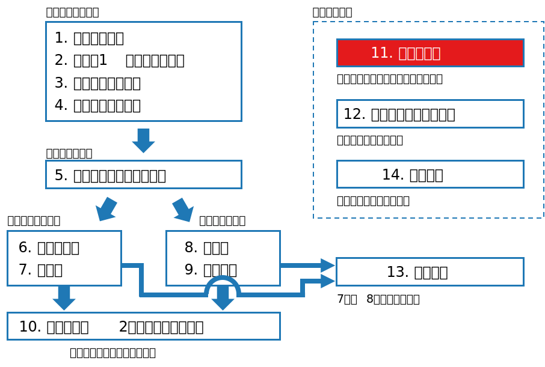
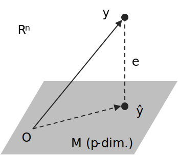
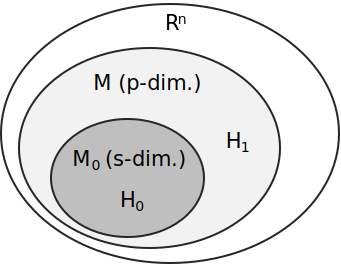

class: middle, center # 数理統計学特論II<br>第5回 線形モデル 奥 牧人 (和漢研) 2022/??/?? --- # 前回の復習 前回の目的 * 代表的な推定と検定を最適性の観点から整理すること 前回の達成目標 * 最適性が保証されている推定や検定を複数あげられる。 * 最適性が保証されていない推定や検定をあげられる。 * 通常使われるが最適ではない推定や検定をあげられる。 * 一元配置分散分析の意味を説明できる。 * 分割表の検定の意味を説明できる。 --- # 今回の位置付け  --- # 今回の目的と達成目標 目的 * 回帰分析と分散分析を統一的に扱う理論的枠組みを理解すること 達成目標 * 単回帰モデルと重回帰モデルの意味を説明できる。 * 一元配置分散分析の線形モデルとしての解釈を説明できる。 * 正規線形モデルの正準形の意味を説明できる。 * 正準形に基づく回帰分析と分散分析の解釈を説明できる。 --- # 予習用キーワードの確認 * 線形部分空間 * 直交行列 * 基底 --- # Outline 1. 回帰モデル 2. 回帰モデルの推定 3. 1元配置分散分析モデル 4. 2元配置分散分析モデル 5. 線形モデルにおける正準形と最小二乗法 6. 正準形に基づく線形モデルの推定と検定 7. 母数のムダと線形推定可能性 --- # Outline 1. **回帰モデル** 2. 回帰モデルの推定 3. 1元配置分散分析モデル 4. 2元配置分散分析モデル 5. 線形モデルにおける正準形と最小二乗法 6. 正準形に基づく線形モデルの推定と検定 7. 母数のムダと線形推定可能性 --- # 単回帰モデル * $n$ 組の観測値 $(x_1,y_1),\ldots,(x_n,y_n)$ について以下を仮定 $$y_i=\beta_0+\beta_1 x_i+\varepsilon_i,\quad i=1,\ldots,n$$ * ここで $\varepsilon_1,\ldots,\varepsilon_n\stackrel{i.i.d.}{\sim}N(0,\sigma^2)$ と仮定 * 例、バネの先につけた分銅の重さ $x$ とバネの長さの測定値 $y$ * $x$ は説明変数、独立変数などと呼ばれる。 * $y$ は被説明変数、従属変数、目的変数などと呼ばれる。 * 通常、回帰分析では、$x$ は確率変数ではなく固定値とみなす。 --- # 単回帰モデル、続き * 誤差の二乗和 $\sum_{i=1}^n\varepsilon_i^2$ を最小化する $\beta_0$, $\beta_1$ の値は <div>$$\hat\beta_1=\frac{\sum_{i=1}^n(x_i-\bar x)(y_i-\bar y)}{\sum_{i=1}^n(x_i-\bar x)^2},\quad \hat\beta_0=\bar y-\hat\beta_1\bar x$$</div> * (参考) 相関係数 <div>$$r=\frac{\sum_{i=1}^n(x_i-\bar x)(y_i-\bar y)}{\sqrt{\sum_{i=1}^n(x_i-\bar x)^2}\sqrt{\sum_{i=1}^n(y_i-\bar y)^2}}$$</div> * 直線 $y=\hat\beta_0+\hat\beta_1 x$ を回帰直線という。 --- # 重回帰モデル * 説明変数が $p$ 次元 ($p\geq 2$) の場合、重回帰モデルという <div>$$y_i=\beta_0+\beta_1x_{i1}+\cdots+\beta_px_{ip}+\varepsilon_i,\quad i=1,\ldots,n$$</div> * 誤差についての仮定は単回帰の場合と同じ * 行列とベクトルを使って表記 <div>$$\left(\begin{array}{c}y_1\\ \vdots\\y_n\end{array}\right)=\left(\begin{array}{cccc}1&x_{11}&\cdots&x_{1p}\\ \vdots&\vdots&\ddots&\vdots\\ 1&x_{n1}&\cdots&x_{np}\end{array}\right)\left(\begin{array}{c}\beta_0\\ \vdots\\ \beta_p\end{array}\right)+\left(\begin{array}{c}\varepsilon_1\\ \vdots\\ \varepsilon_n\end{array}\right)$$</div> * 上の式を次のように書くことにする ($X$ を計画行列という) $$y=X\beta+\varepsilon$$ --- # Outline 1. 回帰モデル 2. **回帰モデルの推定** 3. 1元配置分散分析モデル 4. 2元配置分散分析モデル 5. 線形モデルにおける正準形と最小二乗法 6. 正準形に基づく線形モデルの推定と検定 7. 母数のムダと線形推定可能性 --- # 重回帰モデルの推定 * 重回帰モデルの式 (再掲) $$y=X\beta+\varepsilon$$ * 誤差の二乗和 $\sum_{i=1}^n\varepsilon_i^2=\varepsilon^T\varepsilon$ を最小化する $\beta$ は、$X$ の各列が<br>一次独立の場合に一意に定まる $$\hat\beta=(X^TX)^{-1}X^Ty$$ * $y$ の予測値 $\hat y=X\hat\beta$ と残差 $e=y-\hat y$ は次のように書ける $$\begin{align}\hat y&=P_X y\\\\ e&=(I-P_X)y\\\\ P_X&=X(X^TX)^{-1}X^T \end{align}$$ * 行列 $P_X$ の解釈は後述 --- # $\hat\beta$ の導出 * 誤差の二乗和 $$\begin{align}\varepsilon^T\varepsilon&=(y-X\beta)^T(y-X\beta)\\\\&=y^Ty-\beta^TX^Ty-y^TX\beta+\beta^TX^TX\beta\\\\&=y^Ty-2\beta^TX^Ty+\beta^TX^TX\beta\end{align}$$ * $\beta$ に関する勾配が $0$ ベクトルのとき $$\nabla_\beta(\varepsilon^T\varepsilon)=-2X^Ty+2X^TX\beta=0$$ * 一般に $\nabla_x(x^Tc)=c$, $\nabla_x(x^TAx)=2Ax$ ($A$ は対称) * 従って以下が成り立つ。$(X^TX)^{-1}$ が存在すれば $\hat\beta$ が定まる。 $$X^TX\beta=X^Ty$$ --- # 重回帰モデルの推定、続き * $y$ を「$1$ 次元の点が $n$ 個ある」ではなく「$n$ 次元の点が $1$ 個<br>ある」とみなし、確率変数 $Y$ の実現値と考えると、 $$Y\sim N(X\beta,\sigma^2 I)$$ と書ける。前述のとおり $X$ は値が固定された行列である。 * $\beta$ の最小二乗推定量 $\hat\beta$ は UMVU かつ MLE * $\sigma^2$ の点推定の MLE は $e^Te/n$ * $\sigma^2$ の点推定の UMVU は $e^Te/(n-p-1)$ --- # Outline 1. 回帰モデル 2. 回帰モデルの推定 3. **1元配置分散分析モデル** 4. 2元配置分散分析モデル 5. 線形モデルにおける正準形と最小二乗法 6. 正準形に基づく線形モデルの推定と検定 7. 母数のムダと線形推定可能性 --- # 1元配置分散分析と線形モデル * 対応のない $k$ 標本 <div>$$Y_{ij}\sim N(\mu_i,\sigma^2),\quad i=1,\ldots,k,\quad j=1,\ldots,n_i$$</div> * 総数 $n=\sum_{i=1}^k n_i$ * $Y_{ij}$ を一列に並べる <div>$$Y=(Y_{11},Y_{12},\ldots,Y_{1n_1},Y_{21},\ldots,Y_{kn_k})^T$$</div> * 同様に、各 $\mu_i$ を $n_i$ 個ずつ並べる <div>$$\mu=(\underbrace{\mu_1,\ldots,\mu_1}_{n_1},\underbrace{\mu_2,\ldots,\mu_2}_{n_2},\ldots,\mu_k)^T$$</div> * $Y\sim N(\mu,\sigma^2I)$ とみなす。 --- # 1元配置分散分析と線形モデル、続き * 一方、各 $\mu_i$ を $1$ 個ずつ並べたものを $\beta=(\mu_1,\ldots,\mu_k)$ とすると、次のように書ける $$\mu=X\beta$$ * ここで $X$ は $n\times k$ の行列で、次の例のような形 <div>$$\left(\begin{array}{c}\mu_1\\ \mu_1\\ \mu_2 \\ \mu_2 \\ \mu_3\\ \mu_3\end{array}\right)=\left(\begin{array}{ccc}1&0&0\\1&0&0\\0&1&0\\0&1&0\\0&0&1\\0&0&1\end{array}\right)\left(\begin{array}{c}\mu_1\\ \mu_2 \\ \mu_3\end{array}\right)$$</div> --- # 1元配置分散分析と線形モデル、続き * 1元配置分散分析モデルも重回帰モデルと同じ形に書ける $$Y\sim N(X\beta,\sigma^2I)$$ * $\beta$ の点推定の UMVU かつ MLE は $\hat\beta=(\bar Y_1,\ldots,\bar Y_k)^T$ * 分散分析モデルでは $$\mu_i=\mu_0+\alpha_i,\quad i=1,\ldots,k$$ の形に表すことがある。$\mu_0$ は一般平均、$\alpha_i$ は主効果という。 * このままでは値が一意に定まらない。母数のムダという。 * $\tilde\beta=(\mu_0,\alpha_1,\ldots,\alpha_k)^T$ としたとき、対応する計画行列 $\tilde X$ の各列は一次独立にならない。 --- # 1元配置分散分析の復習 * 帰無仮説 $$H_0:\mu_1=\cdots=\mu_k$$ * 群間平方和と群内平方和 ($\bar{\bar Y}$ は全平均) <div>$$W_H=\sum_{i=1}^k (\bar Y_i-\bar{\bar Y})^2,\quad W_E=\sum_{i=1}^k\sum_{j=1}^{n_i} (Y_{ij}-\bar Y_i)^2$$</div> * 検定 <div>$$F=\frac{W_H/(k-1)}{W_E/(n-k)}>F_\alpha(k-1,n-k)\quad\Rightarrow\quad\mathrm{reject}$$</div> --- # Outline 1. 回帰モデル 2. 回帰モデルの推定 3. 1元配置分散分析モデル 4. **2元配置分散分析モデル** 5. 線形モデルにおける正準形と最小二乗法 6. 正準形に基づく線形モデルの推定と検定 7. 母数のムダと線形推定可能性 --- # 2元配置分散分析 * 分散分析では「要因」と「水準」という用語を用いる。 * 下の図で、$A$ と $B$ が要因、$A1$, $A2$ などが水準である。 <table class="table text-center mt-4 mb-5" style="width:60%"> <tr><th></th><th>B1</th><th>B2</th><th>B2</th></tr> <tr><th>A1</th><td>$\{Y_{11k}\}$</td><td>$\{Y_{12k}\}$</td><td>$\{Y_{13k}\}$</td></tr> <tr><th>A2</th><td>$\{Y_{21k}\}$</td><td>$\{Y_{22k}\}$</td><td>$\{Y_{23k}\}$</td></tr> </table> * 2つの要因を $A$, $B$ とし、それぞれの水準数を $a$, $b$ とする。 * 2元配置分散分析モデル <div>$$Y_{ijk}\sim N(\mu_{ij},\sigma^2),\quad i=1,\ldots,a;\,j=1,\ldots,b;\,k=1,\ldots,n_{ij}$$</div> --- # 2元配置分散分析、続き * 2元配置分散分析の場合も線形モデル $Y\sim N(X\beta,\sigma^2I)$ の形に<br>書き直すことが出来る。 * 2元配置分散分析では通常 $\mu_{ij}$ を次のように表す。 <div>$$\mu_{ij}=\mu_0+\alpha_i+\beta_j+\gamma_{ij}$$</div> * $\mu_0$ は一般平均 * $\alpha_i$ は要因 $A$ の水準 $i$ の主効果 * $\beta_j$ は要因 $B$ の水準 $j$ の主効果 * $\gamma_{ij}$ はそれらの交互作用 * 母数のムダがあるので、$\sum_i\alpha_i=0$ などの制約条件を加える。 --- # 2元配置分散分析の検定 * 主な帰無仮説 <div>$$\begin{align}H_A&:\alpha_1=\cdots=\alpha_a=0\\H_B&:\beta_1=\cdots=\beta_b=0\\ H_{AB}&:\gamma_{11}=\cdots=\gamma_{ab}=0 \end{align}$$</div> * 簡単のため $n_{ij}=r>1$ を仮定 * $(i,j)$ の平均と、その行毎、列毎、全体の平均 <div>$$\bar Y_{ij}=\frac{1}{r}\sum_{k=1}^r Y_{ijk}$$</div> <div>$$\bar Y_{i\bullet}=\frac{1}{b}\sum_j \bar Y_{ij},\quad\bar Y_{\bullet j}=\frac{1}{a}\sum_i \bar Y_{ij},\quad\bar{\bar Y}=\frac{1}{ab}\sum_{i,j} \bar Y_{ij}$$</div> --- # 平方和の分解 * 平方和の分解 <div>$$\begin{align}W_T&=\sum_{i,j,k}(Y_{ijk}-\bar{\bar Y})^2=W_A+W_B+W_{AB}+W_E\\W_A&=br\sum_i(\bar Y_{i\bullet}-\bar{\bar Y})^2\\W_B&=ar\sum_j(\bar Y_{\bullet j}-\bar{\bar Y})^2\\W_{AB}&=r\sum_{i,j}(\bar Y_{ij}-\bar Y_{i\bullet}-\bar Y_{\bullet j}+\bar{\bar Y})^2\\W_E&=\sum_{i,j,k}(Y_{ijk}-\bar Y_{ij})^2\end{align}$$</div> --- # 分散分析表 <table class="table text-center mt-5" style="width:70%"> <tr><th></th><th>平方和</th><th>自由度</th></tr> <tr><th>Aの主効果</th><td>$W_A$</td><td>$a-1$</td></tr> <tr><th>Bの主効果</th><td>$W_B$</td><td>$b-1$</td></tr> <tr><th>ABの交互作用</th><td>$W_{AB}$</td><td>$(a-1)(b-1)$</td></tr> <tr><th>誤差</th><td>$W_E$</td><td>$ab(r-1)$</td></tr> <tr><th>計</th><td>$W_T$</td><td>$abr-1$</td></tr> </table> --- # 2元配置分散分析の検定の例 * 例、交互作用に対する仮説 $H_{AB}$ の検定 <div>$$\begin{align}F=\frac{W_{AB}/((a-1)(b-1))}{W_E/{(ab(r-1))}}>F_\alpha((a-1)(b-1),ab(r-1))\\ \Rightarrow\quad\mathrm{reject}\end{align}$$</div> * (参考) 1元配置分散分析 <div>$$F=\frac{W_H/(k-1)}{W_E/(n-k)}>F_\alpha(k-1,n-k)\quad\Rightarrow\quad\mathrm{reject}$$</div> --- # Outline 1. 回帰モデル 2. 回帰モデルの推定 3. 1元配置分散分析モデル 4. 2元配置分散分析モデル 5. **線形モデルにおける正準形と最小二乗法** 6. 正準形に基づく線形モデルの推定と検定 7. 母数のムダと線形推定可能性 --- # 正規線形モデル * 回帰モデルも分散分析モデルも以下の形にできる (再掲) $$Y\sim N(X\beta,\sigma^2I)$$ * $Y\in\mathbb{R}^n$ に対し、平均 $X\beta$ の動ける範囲が限定されている。 * 一般に、$M\subset\mathbb{R}^n$ を $p$ 次元の既知の線形部分空間として、以下の形で表されるモデルを正規線形モデルという $$Y\sim N(\mu,\sigma^2I),\quad\mu\in M$$ * ここから先は行列と区別するために確率変数も小文字で表す。 --- # 正準形 * 正規線形モデルは、適当な直交行列 $G$ を用いて $z=G^Ty$ と変換することにより、以下の正準形で表すことができる。 $$\begin{align}z_i&\sim N(\eta_i,\sigma^2),\quad i=1,\ldots,p\\\\z_i&\sim N(0,\sigma^2),\quad i=p+1,\ldots,n\end{align}$$ * ここで $z_i$ は全て互いに独立 --- # 確認 * $M$ の適当な正規直交基底を $\\{g_1,\ldots,g_p\\}$ とする。 * $M$ の直交補空間 $M^\perp$ も同様に $\\{g_{p+1},\ldots,g_n\\}$ とする。 * これらの縦ベクトルを横に並べた行列を $G_1$, $G_2$ とし、$G=(G_1,G_2)$ とすると、$G$ は直交行列 * 直交行列の性質より $|\det G|=1$ なので、 $$z\sim N(\tilde\eta,\sigma^2I),\quad \tilde\eta=G^T\mu,\quad\mu\in M$$ * ここで $g_i^T\mu=0$, $i=p+1,\ldots,n$ より、 $$\tilde\eta=(\eta_1,\ldots,\eta_p,0,\ldots,0)$$ * 改めて $\eta=(\eta_1,\ldots,\eta_p)$ とおくと、$\mu=G\tilde\eta=G_1\eta$ で、$G_1$ の列は$M$ の正規直交基底より、$\eta$ の各要素は自由に動ける。 --- # 回帰モデルの解釈 * 二乗誤差 $\lVert\varepsilon\rVert^2=\lVert y-X\beta\rVert^2$ の最小化は $\mu=X\beta$ として $$\min_{\mu\in M}\lVert y-\mu\rVert^2$$ * 図で表すと  --- # 二乗誤差の最小化 * $z=G^T y$ で正準形に変換し、$X$ の列数を改めて $p$ とおくと <div>$$\begin{align}\lVert y-\mu\rVert^2&=(y-\mu)^T(y-\mu)\\&=(y-\mu)^TGG^T(y-\mu)\\&=(z-\tilde\eta)^T(z-\tilde\eta)\\&=\sum_{i=1}^p (z_i-\eta_i)^2+\sum_{i=p+1}^n z_i^2\end{align}$$</div> * 右辺を最小化するのは $\eta_i=z_i$, $i=1,\ldots,p$ のとき * このときの $\hat y$ を計算 ($\mu=G_1\eta$, $z=G^Ty$ を使う) $$\hat y=g_1z_1+\cdots+g_pz_p=(g_1g_1^T+\cdots+g_pg_p^T)y=G_1G_1^Ty$$ * ここで $P_M=G_1G_1^T$ は $y$ から $\hat y$ への射影を表す。 --- # 直交射影行列 * $P_M$ は $M$ への直交射影行列と呼ばれ、以下の性質を持つ $$(P_M)^2=P_M,\quad (P_M)^T=P_M$$ * 同様に、残差ベクトルも正準形で計算 <div>$$\begin{align}e=y-\hat y&=Gz-(g_1z_1+\cdots+g_pz_p)\\&=z_{p+1}g_{p+1}+\cdots+z_ng_n\in M^\perp\end{align}$$</div> * $e=(I-P_M)y$ より、$y$ から $e$ への射影は次のように書ける <div>$$P_{M^\perp}=I-P_M$$</div> --- # Outline 1. 回帰モデル 2. 回帰モデルの推定 3. 1元配置分散分析モデル 4. 2元配置分散分析モデル 5. 線形モデルにおける正準形と最小二乗法 6. **正準形に基づく線形モデルの推定と検定** 7. 母数のムダと線形推定可能性 --- # 正準形の推定 * $\tilde z=(z_1,\ldots,z_n)$, $z=(z_1,\ldots,z_p)$ とおくと、 $$z\sim N(\eta,\sigma^2I_p)$$ * $\eta$ の点推定の UMVU は $\hat\eta=z$ * 元の座標系に戻したとき、$\mu$ の UMVU は $\hat\mu=G_1\hat \eta$ --- # 正規線形モデルの検定 * $M_0\subset M$ を $s$ 次元の線形部分空間とする。 * 検定問題 $$H_0:\mu\in M_0\quad\mathrm{vs.}\quad H_1:\mu\in M\setminus M_0$$ * 図で表すと  --- # 正準形の検定 * 正準形で考える。 * $z_1,\ldots,z_s$ を $M_0$ に対応させると、検定問題は <div>$$\begin{align}H_0&:\eta_{s+1}=\cdots=\eta_p=0,\quad \eta_{p+1}=\cdots=\eta_n=0\\ H_1&:\exists i\in[s+1,p],\,\eta_i\neq 0,\quad \eta_{p+1}=\cdots=\eta_n=0\end{align}$$</div> --- # 正準形の検定、続き * $z_1,\ldots,z_s$ は $H_0$, $H_1$ ともに平均は任意 * $z_{s+1},\ldots,z_p$ は $H_0$ のときのみ平均 $0$ * $z_{p+1},\ldots,z_n$ は $H_0$, $H_1$ ともに平均 $0$ * $F$ 検定 <div>$$\begin{align}F=\frac{(z_{s+1}^2+\cdots z_p^2)/(p-s)}{(z_{p+1}^2+\cdots z_n^2)/(n-p)}>F_\alpha(p-s,n-p)\\\Rightarrow\quad\mathrm{reject}\end{align}$$</div> * 特に $s=p-1$ の場合は $t$ 検定と等価 <div>$$t=\frac{z_p}{\sqrt{(z_{p+1}^2+\cdots z_n^2)/(n-p)}}>t_\alpha(n-p)\quad\Rightarrow\quad\mathrm{reject}$$</div> --- # 回帰モデルの検定 * 重回帰モデル (係数が $p$ 個となるように書き直した) <div>$$y_i=\beta_0+\beta_1x_{i,1}+\cdots+\beta_{p-1}x_{i,p-1}+\varepsilon_i,\quad i=1,\ldots,n$$</div> * 個別の回帰係数 $\beta_k$ についての検定 $$H_0:\beta_k=0\quad\mathrm{vs.}\quad H_1:\beta_k\neq 0$$ * $s=p-1$ の場合に相当 --- # 1元配置分散分析モデルの検定 * 1元配置分散分析モデル (グループ数を $p$ と書き直した) $$Y_{ij}\sim N(\mu_i,\sigma^2),\quad i=1,\ldots,p,\quad j=1,\ldots,n_i$$ * 検定問題 $$H_0:\mu_1=\cdots=\mu_p\quad\mathrm{vs.}\quad H_1:\mu_i\neq\mu_j,\ \exists i,j$$ * $s=1$ の場合に相当 --- # Outline 1. 回帰モデル 2. 回帰モデルの推定 3. 1元配置分散分析モデル 4. 2元配置分散分析モデル 5. 線形モデルにおける正準形と最小二乗法 6. 正準形に基づく線形モデルの推定と検定 7. **母数のムダと線形推定可能性** --- # 線形推定可能性 * 分散分析で $\mu_i=\mu_0+\alpha_i$ などとおくと母数が一意に定まらない問題があった。 * 追加の制約 $\sum_i\alpha_i=0$ または $\sum_i n_i\alpha_i=0$ を加えれば定まる。 * $\alpha_i-\alpha_j$ ($i\neq j$) はどの制約でも同じ値になる。 * 一般に、以下の線形方程式を考える $$Ax=b,\quad C^Tx=0$$ * ここで $A\in\mathbb{R}^{n\times q}$, $\mathrm{rank}\,A=p<q$, $x\in\mathbb{R}^q$, $b\in\mathbb{R}^n$, $C^T\in\mathbb{R}^{(q-p)\times q}$ * $x$ の要素の一次結合 $a^Tx$ が追加の制約 $C$ によらないとき、$a^Tx$ は線形推定可能という。 --- # 線形推定可能性、続き * 行列 $A$ のカーネル (核) $$\mathrm{Ker}\ A=\\{x\mid Ax=0\\}$$ * $x'$ を $Ax'=b$ を満たす任意の解とすると、$Ax=b$ の任意の解は以下のように表される $$x=x'+\tilde x,\quad \tilde x\in\mathrm{Ker}\ A$$ * $a^Tx$ が制約条件 $C^Tx=0$ によらない必要十分条件は $$a^T\tilde x=0,\quad \forall\tilde x\in\mathrm{Ker}\ A$$ * 従って $a\in(\mathrm{Ker}\ A)^\perp=\mathrm{Im}\ A^T$、つまり、$a$ が $A$ の行ベクトルの一次結合であれば $a^Tx$ は線形推定可能 --- # まとめ 回帰分析と分散分析を統一的に扱う理論的枠組みを説明しました。 1. 回帰モデル<br> <span class="times">!</span> 単回帰モデルと重回帰モデルの意味を説明できる? 2. 回帰モデルの推定 3. 1元配置分散分析モデル<br> <span class="times">!</span> 一元配置分散分析の線形モデルとしての解釈を説明できる? 4. 2元配置分散分析モデル 5. 線形モデルにおける正準形と最小二乗法<br> <span class="times">!</span> 正規線形モデルの正準形の意味を説明できる? 6. 正準形に基づく線形モデルの推定と検定<br> <span class="times">!</span> 正準形に基づく回帰分析と分散分析の解釈を説明できる? 7. 母数のムダと線形推定可能性 --- # 小テスト * Moodleで小テストに回答して下さい。 * **期限は今週中** (日曜の23:59まで) とします。 * 繰り返し受験して構いません。最高得点で成績をつけます。 --- # 次回の予習用キーワード * マン・ホイットニーの $U$ 検定